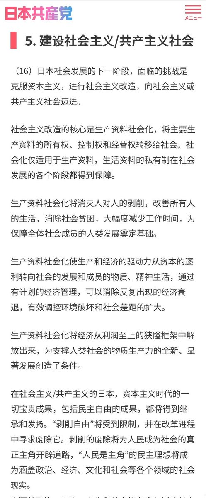

「智利社會黨是共產黨」💧
我就請問了，哪個時期的智利社會黨會同意這個說法？😅阿連德一直是自稱「民社主義者」，並主張通過民主選舉的手段實現社會主義，跟你們康米的主張和實際的行為到底哪沾邊了？😅
而且真要按你這個說法，你就是在打臉上次給日共發社民帽子的自己了🤣

我就請問了，哪個時期的智利社會黨會同意這個說法？😅阿連德一直是自稱「民社主義者」，並主張通過民主選舉的手段實現社會主義，跟你們康米的主張和實際的行為到底哪沾邊了？😅
而且真要按你這個說法，你就是在打臉上次給日共發社民帽子的自己了🤣

谁说民主集中制只能共产党用的，孙中山时期的国民党也是民主集中制的，孙中山是共产党吗？你们只抽象出一个事物中的几种性质来决定一个事物的总体性质永远是无法得出全面而准确的判断的，一个党是不是共产党是其所有组成部分的性质决定的，只有支持阶级专政、公有制、计划经济的才是，就像智利社会党。 https://t.co/pA2lOc0KoR